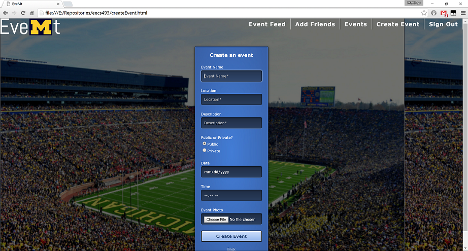

When you first start EveMt you will be brought to the sign in page.
You can also create a new account from here.

After signing in you will be taken to the Events Feed page. From here you can view all the local events and decide if you want to go to them.
The links in the upper right will allow you to navigate to the other pages.

The Events page has a list of all the events you are going to and allows you to change your RSVP to not going.
It also has a button that allows you to swap the view to a feed of your friends events with the Friends' Feed button and back again with the My Feed button.

The Add Friends page allows you to add any other EveMt user as a friend and view the events they are going to. Then you can decide if you want to go to them.

The last page is the Create Event page which lets you create an event.
